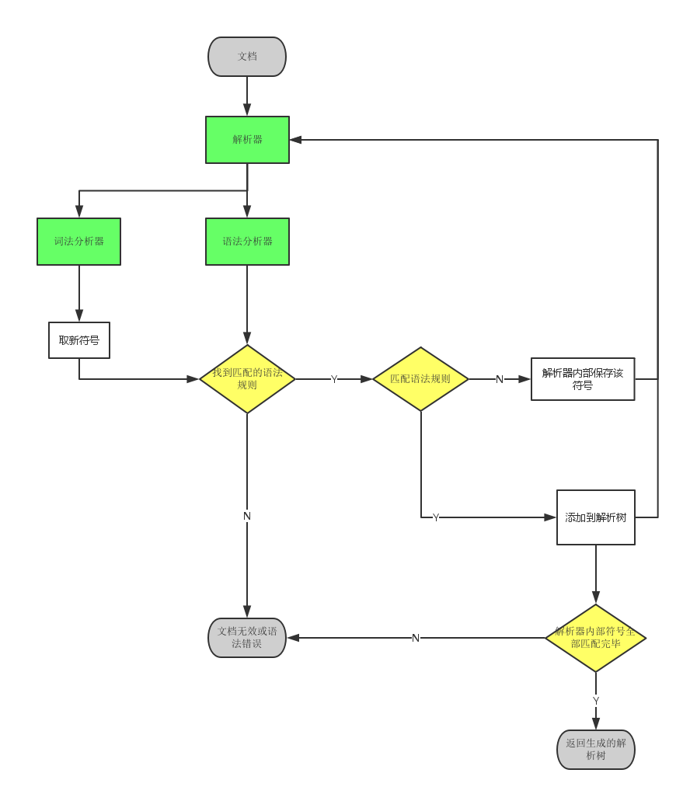
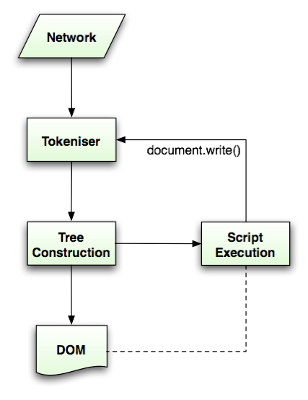

简单来说浏览器可以分为两部分，shell+内核。
Shell是指浏览器的外壳：例如菜单，工具栏等。主要是提供给用户界面操 作，参数设置等等。它是调用内核来实现各种功能的。
内核才是浏览器的核心。内核是基于标记语言显示内容的程序或模块。
常见的浏览器内核可以分这四种：Trident、Gecko、 Presto、Webkit。
浏览器一般由以下组件构成 ：
【注意：】浏览器的执行时多线程的，但JavaScript引擎的执行时单线程。所以说浏览器是单线程的这种说法不对！
渲染引擎根据各浏览器厂商实现各有不同，比如Firefox使用Geoko——Mozilla自主研发的渲染引擎，Safari和Chrome都使用webkit。
Webkit是一款开源渲染引擎。webkit源码下载
渲染引擎首先通过网络获得所请求文档的内容，通常以8K分块的方式完成。
基本流程：

即：请求HTML ==> 解析HTML ==> 构建DOM树 ==> 构建render树 ==> 绘制reder树。
webkit主流程：

Mozilla的Geoko 渲染引擎主流程:

【注意:】这个渲染过程是逐步完成的，也即解析完一部分就执行一部分。
解析一个文档即将其转换为具有一定意义的结构——编码可以理解和使用的东西。解析的结果通常是表达文档结构的节点树，称为解析树或语法树。
举个栗子：
表达式： "2 + 3 - 1"
返回解析树：
传统解析文法： 上下文无关文法
HTML文档解析（非上下文无关文法）： DTD（Document Type Definition 文档类型定义）
解析器有两个子过程：
词法分析器
语法分析器
解析过程：

解析结果：解析树。
将解析树转换成机器码。

DOM树，也就是解析树，由DOM元素及属性节点组成的。DOM是文档对象模型的缩写，它是html文档的对象表示，作为html元素的外部接口供js等调用。
树的根是“document”对象。
HTML的解析过程比较特殊，原因是：
Html5规范中描述了HTML文档解析算法，算法包括两个阶段：
如图：

使用状态机来分析识别单词和符号。


Html5规范中有符号化及构建树的完整算法(http://www.w3.org/TR/html5/syntax.html#html-parser)。
有些html即使不符合规则，但浏览器也不好报解析错误或异常，浏览器会在解析过程中修复HTML作者的错误。 比如：
```
<mytag>
</mytag>
<div>
<p>
</div>
Really lousy HTML
</p>
```
会被解析成：
```
</mytag>
<div>
<p>
</p></div>
Really lousy HTML
<p></p>
</body>
</html>
```
CSS的解析属于上下文无关文法，可以用常规的解析器来解析。Css规范定义了css的词法及语法文法。
Webkit使用Flex和Bison解析生成器从CSS语法文件中自动生成解析器。
举个栗子：

web的模式是同步的，开发者希望解析到一个script标签时立即解析执行脚本，并阻塞文档的解析直到脚本执行完。
如果脚本是外引的，则网络必须先请求到这个资源——这个过程也是同步的，会阻塞文档的解析直到资源被请求到。
引用外部脚本时，有可以标记异步执行脚本的属性：
看图：

当执行脚本时，另一个线程解析剩下的文档，并加载后面需要通过网络加载的资源。这种方式可以使资源并行加载从而使整体速度更快。
预解析并不改变Dom树，它将这个工作留给主解析过程，自己只解析外部资源的引用，比如外部脚本、样式表及图片。
渲染树由元素显示序列中的可见元素组成，它是文档的可视化表示，构建这棵树是为了以正确的顺序绘制文档内容。
Firefox将渲染树中的元素称为frames，webkit则用renderer或渲染对象来描述这些元素。
一个渲染对象知道怎么布局及绘制自己及它的子对象。
RenderObject是Webkit的渲染对象基类，它的定义如下：
``` class RenderObject{
virtual void layout();
virtual void paint(PaintInfo);
virtual void rect repaintRect();
Node* node; //the DOM node
RenderStyle* style; // the computed style
RenderLayer* containgLayer; //the containing z-index layer
}
```
每个渲染对象用一个和该节点的css盒模型相对应的矩形区域来表示。它包含诸如宽、高和位置之类的几何信息。
盒模型的类型受该节点相关的display样式属性的影响。
看下webkit对display属性属性的实现：
``` RenderObject* RenderObject::createObject(Node* node, RenderStyle* style) { Document* doc = node->document(); RenderArena* arena = doc->renderArena();
...
RenderObject* o = 0;
switch (style->display()) {
case NONE:
break;
case INLINE:
o = new (arena) RenderInline(node);
break;
case BLOCK:
o = new (arena) RenderBlock(node);
break;
case INLINE_BLOCK:
o = new (arena) RenderBlock(node);
break;
case LIST_ITEM:
o = new (arena) RenderListItem(node);
break;
...
}
return o;
}
```
渲染树上的渲染对象和DOM树上的元素节点并不是一一对应的。
渲染对象和对应的DOM节点也可能不在相同的位置。例如，浮动和绝对定位的元素在文本流之外，在两棵树上的位置不同，渲染树上标识出真实的结构，并用一个占位结构标识出它们原来的位置。

创建渲染树需要计算出每个渲染对象的可视属性，这可以通过计算每个元素的样式属性得到。
样式包括各种来源的样式表，行内样式元素及html中的可视化属性（例如bgcolor），可视化属性转化为css样式属性。
样式表来源于浏览器默认样式表，及页面作者和用户提供的样式表——有些样式是浏览器用户提供的。
样式的来源多样，因此计算时会有一些困难：
浏览器解决这些问题的策略：
共享样式数据
Firefox规则树和上下文样式树
webkit也有样式对象。
对规则进行处理以简化匹配过程
解析完样式表之后，规则会根据选择符添加一些hash映射，映射可以是根据id、class、标签名或是任何不属于这些分类的综合映射。如果选择符为id，规则将被添加到id映射，如果是class，则被添加到class映射，等等。
以正确的级联顺序应用规则
规则匹配后，需要根据级联顺序对规则进行排序，webkit先将小列表用冒泡排序，再将它们合并为一个大列表。
逐步处理
当渲染对象被创建并添加到树中，它们并没有位置和大小，计算这些值的过程称为layout或reflow。 每个渲染对象都一个layout或reflow方法，触发布局的时候调用。
布局可以在文档中从右向左、自上而下的进行。
布局是一个递归的过程，由根渲染对象开始，递归的通过一些或所有的渲染对象层级，为每个需要几何信息的渲染对象进行计算。
一个渲染对象发生了变化或是被添加了一个子渲染对象，就标记它和它的children为'dirty'，表示需要layout。
还有一个标识是：'children are dirty'，标识这个渲染对象可能不需要layout，但它的children至少有一个需要layout。
目的：不因为每个小变化都全部重新布局。
全局Layout，一般同步触发，也即整棵渲染树触发layout时：
增量layout：只有被标识为dirty的渲染对象才会重新布局。而且这个过程是异步触发的。
浏览器做的优化：
layout一个渲染对象，要经过以下步骤：
绘制阶段，遍历渲染树并调用渲染对象的paint方法将它们的内容显示在屏幕上
绘制也分全局和增量绘制。
增量绘制时候也使用的dirty标识屏幕上的矩形区域。
css2定义了绘制过程的顺序－http://www.w3.org/TR/CSS21/zindex.html。这个就是元素压入堆栈的顺序，这个顺序影响着绘制，堆栈从后向前进行绘制。
一个块渲染对象的堆栈顺序为：
浏览器总是试着以最小的动作响应一个变化。
所以这就存在有些属性的变化只会改变单个渲染对象的值，如颜色，字体，transform等。但有些属性则会导致大面积的重绘，如位置的变化等。
浏览器是多线程的，渲染引擎和JavaScript是单线程的。其中渲染引擎则是浏览器的主线程。
浏览器的主线程是一个事件循环，它被设计为无限循环以保持执行过程的可用，等待事件（例如layout和paint事件）并执行它们。